A kitchen doesn't need a full redecorate to feel like fall.
A handful of small category swaps, textiles, color, scent, cover most of the seasonal transformation.
These 15 categories are organized by what they actually change in the room, not by a specific product to hunt down.

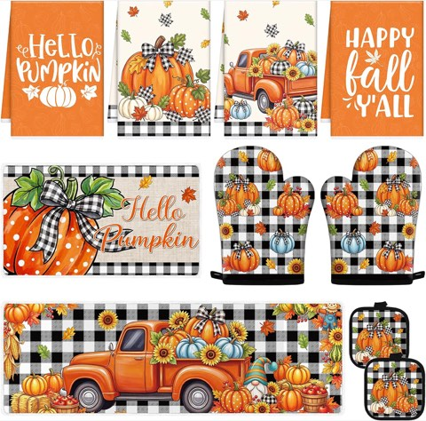
Fall Kitchen Decor Set, 10 Pcs, Hello Pumpkin Mats, Towels, Oven Mitts and Pot Holders
Shop on Amazon1. Seasonal Garland
A length of garland drapes easily along a shelf edge, a window, or above a doorway.
This is one of the more flexible categories on this list, it adapts to wherever the kitchen actually needs a bit more seasonal presence.
Easy to store and reuse year after year once the season wraps up.
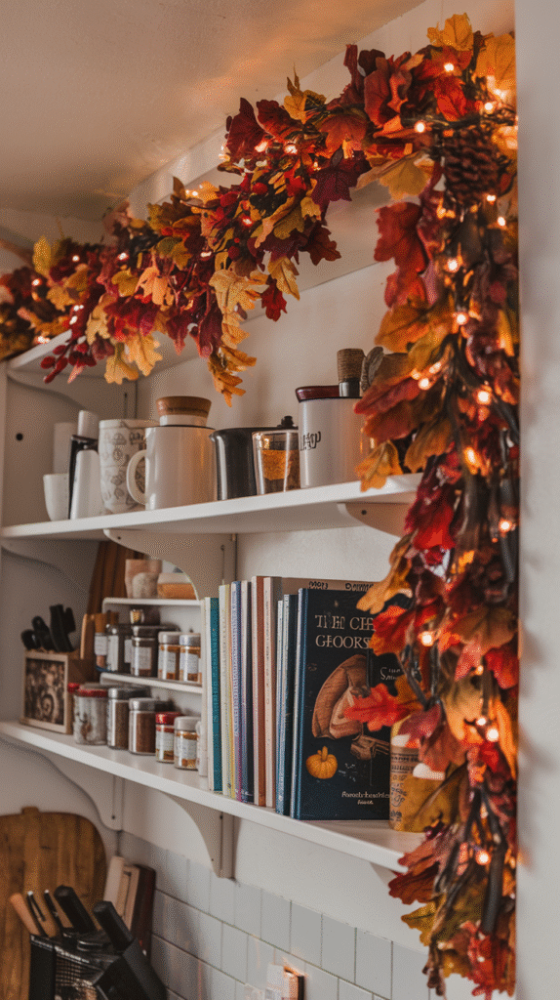

2. A Mini Fall Wreath
A small wreath on a pantry door or cabinet front adds a seasonal touch to a spot that usually goes unstyled.
This works in a much smaller space than a front-door wreath, which makes it a good fit for a kitchen specifically.
A quick, low-cost way to extend seasonal styling past just the counters and table.
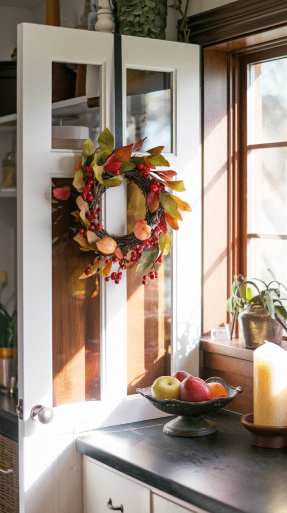
3. Harvest-Toned Storage Jars
A set of amber or warm-toned glass storage jars brings color to open shelving or a pantry while staying genuinely functional.
This works well for flour, sugar, pasta, or any dry good already needing a container.
A category that earns its keep well beyond a single season.
4. Seasonal Kitchen Utensils
A set of utensils in a warm wood tone or seasonal color adds a small, functional detail that still gets noticed daily.
This works especially well displayed in a crock or holder on the counter, where it's visible rather than tucked in a drawer.
A practical, everyday category rather than a purely decorative one.
5. Framed Fall Prints
A simply framed seasonal print or illustration adds color and warmth to a kitchen wall without looking overly literal or themed.
Choosing something subtle, a botanical print, an abstract piece in warm tones, keeps it from reading as a one-season-only decoration.
Worth prioritizing over a more obviously seasonal piece for something with longer visual staying power.
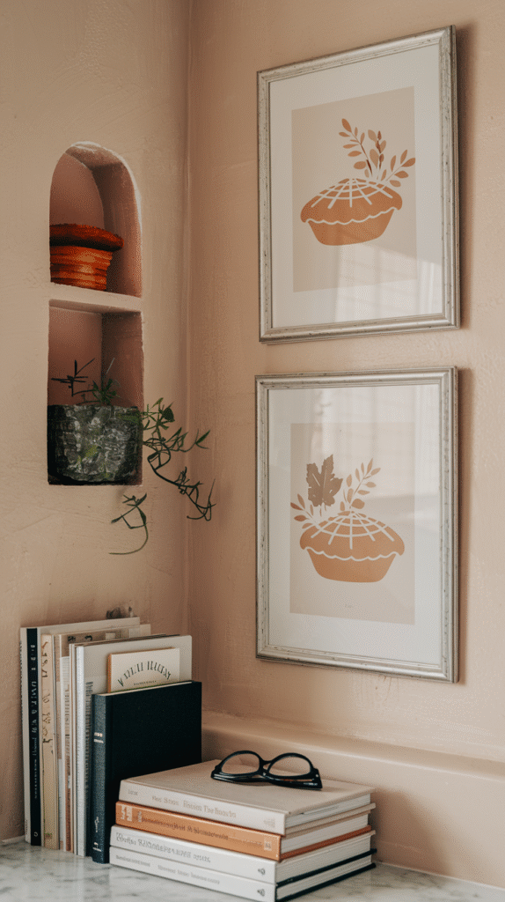

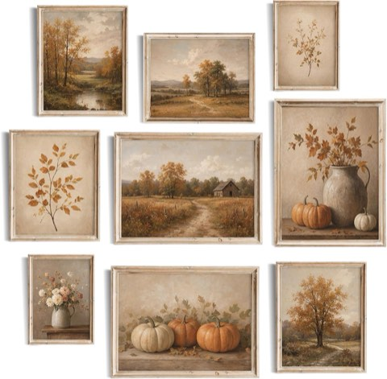
SQGGZH Vintage Fall Gallery Wall Art Set of 9, Autumn Landscapes, Unframed
Shop on Amazon6. A Rustic Wall Sign
A simple wood or metal sign with a seasonal phrase adds personality to an empty kitchen wall.
This works well leaned on a shelf or counter too, not just mounted.
A low-commitment way to add character without a permanent installation.
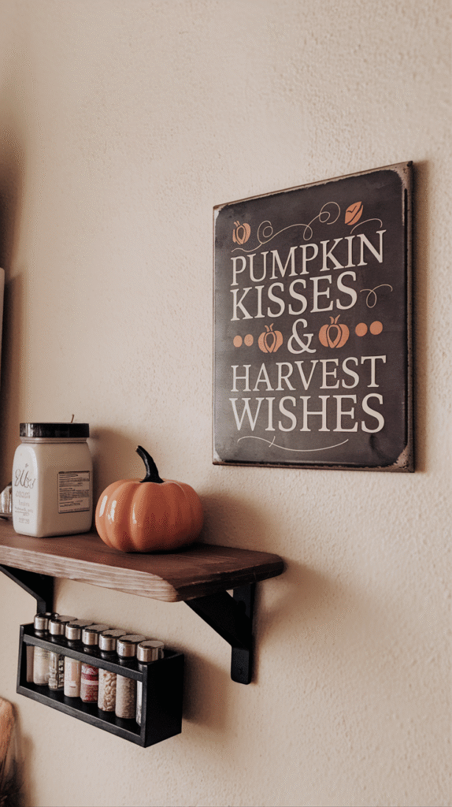
7. Seasonal Spoon Rests
A small spoon rest in a fall motif is a tiny, low-cost detail that still gets noticed on a counter.
This solves a genuine daily function, somewhere for a used spoon or spatula to go, while adding a seasonal touch.
One of the smallest, cheapest categories on this entire list.
8. Seasonal Baking Dishes
A pumpkin-shaped or warm-toned baking dish does double duty as both a functional piece and a styled object when not in use.
This suits anyone who actually bakes regularly during the season, getting real use out of what would otherwise be a purely decorative purchase.
Worth choosing a piece versatile enough to use well past the fall months too.
9. An Autumn-Themed Kitchen Mat
A standing mat in a fall print or warm tone adds comfort underfoot while also contributing to the room's seasonal color story.
This is a genuinely functional upgrade, not just a decorative one, for anyone who spends real time standing at the counter or sink.
Worth choosing a pattern subtle enough to work past the season if a full swap-out isn't practical.
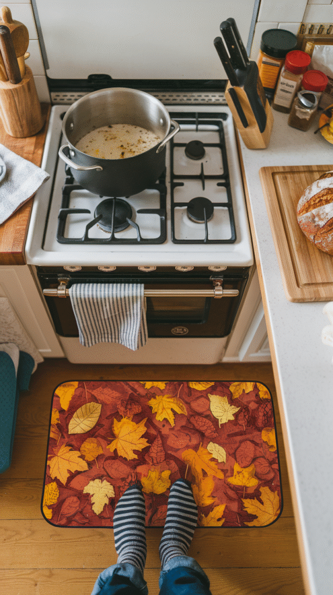
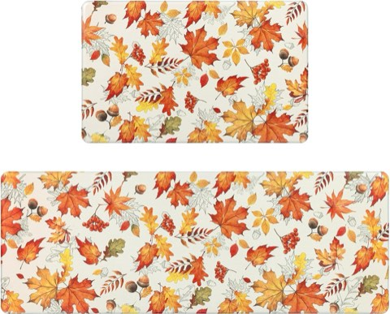
SHACOS Fall Anti Fatigue Kitchen Mats, Orange Maple and Acorn, Set of 2
Shop on Amazon10. A Seasonal Mug Rack
A wall-mounted mug rack adds both storage and display, doubling as function and decor.
Filled with mugs in warm, seasonal colors, it becomes a small styled moment on an otherwise plain wall.
A practical addition that doesn't need to be swapped out once the season ends.
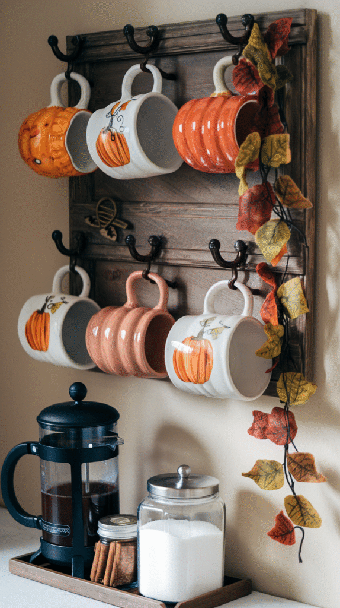
11. A Seasonal Table Runner
A plaid or warm-toned table runner resets the whole dining area for very little cost.
This is one of the simplest swaps on this list, no installation, no commitment beyond laying it down.
Pairing it with mini faux pumpkins rounds out a simple table centerpiece.
12. Mini Faux Pumpkins
A small cluster of faux pumpkins on a counter, windowsill, or dining table adds an instant, recognizable seasonal touch.
Being faux means they last well beyond a single season and can be reused every year without any waste.
A low-cost, high-recognition category that works in nearly any kitchen style.
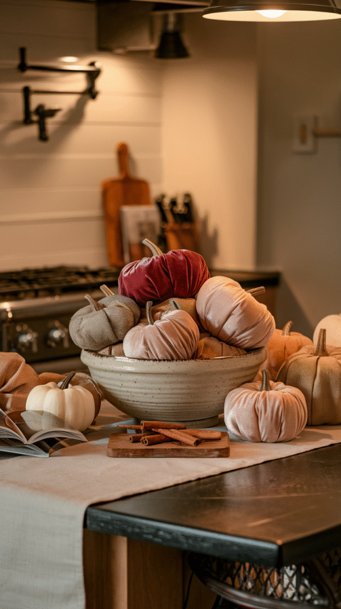
13. Fall-Scented Candles
Scent does as much for a seasonal mood as any visible decor change.
Warm notes, spice, amber, baked goods, read as fall without needing to look seasonal at all.
This is one of the cheapest items on the whole list, and one of the easiest to rotate out once the season changes.
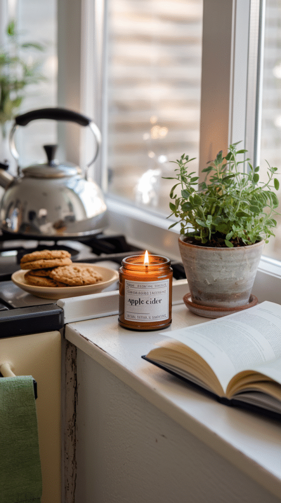

14. Rust and Amber-Toned Dishware
A few pieces of dishware in warm, earthy tones, displayed on open shelving or used for everyday meals, bring fall color into the kitchen without a full set replacement.
This doesn't require buying a whole new dinnerware set; a handful of accent pieces mixed with existing neutral dishware works just as well.
A durable, versatile addition that extends well beyond a single season.
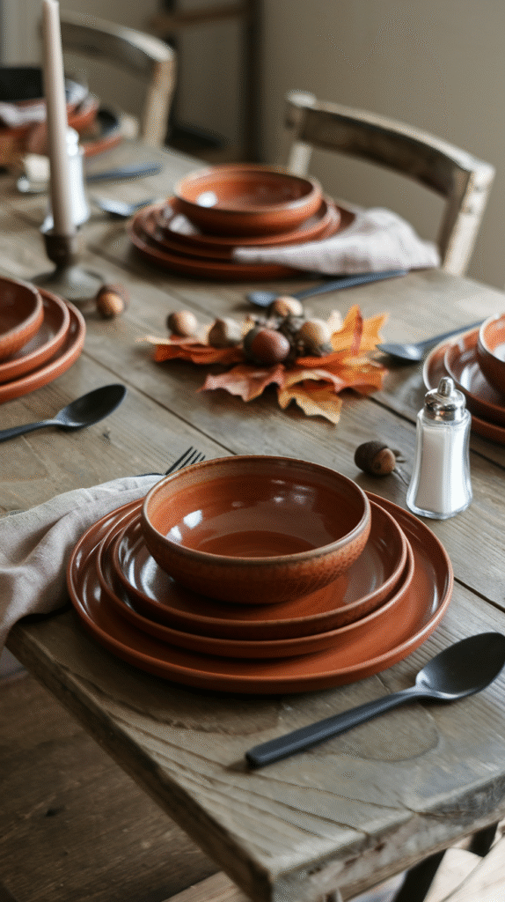
15. Seasonal Kitchen Towels
A set of towels in a warm fall print or rust-toned solid is one of the cheapest, fastest swaps on this entire list.
This works as both decor and daily function, since the towels get used regardless.
Rotating in a new set takes seconds and instantly shifts the kitchen's color story.
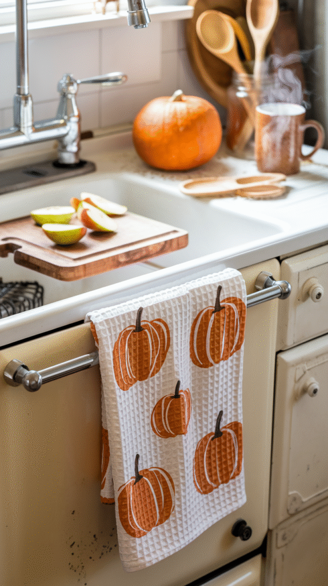
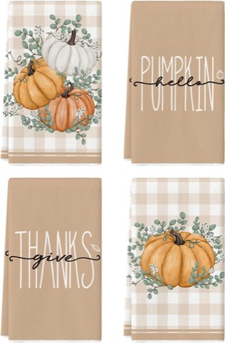
Artoid Mode Orange Hello Pumpkin Fall Kitchen Towels, Set of 4, 18 x 26 Inch
Shop on AmazonFinal Thoughts
None of these 15 categories require a full kitchen overhaul.
A few towels, some candles, and a bit of seasonal color on open shelving cover most of the transformation most people are after.
Pick two or three categories that fit the kitchen's actual layout, and build from there.
A cozy fall kitchen comes down to small, layered details, not one big purchase.
Most of these categories also pack away easily, so the same pieces can come right back out again next year.